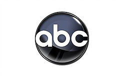
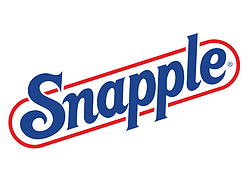
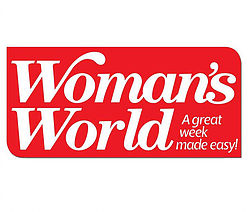
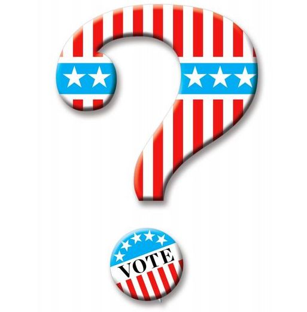
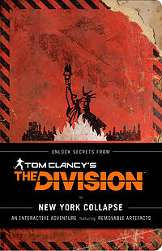
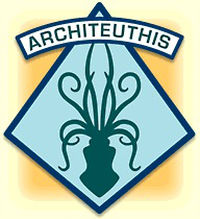

Puzzability is a puzzle-writing company. But the puzzles and games created by Puzzability are not your typical word searches and dot-to-dots. Whether for adults or kids, whether for print or electronic media, whether general-interest or made-to-order, our puzzles are involving, rewarding, and, above all, fresh. Puzzability can create puzzles for websites, social media, ads, packaging and promotions, game and reality shows, corporate events, contests, CD-ROMs, magazines — yes, even diner placemats.
We like to point out three ingredients you'll find in our puzzles:
Solvability
A puzzle left unsolved is basically a failure. Puzzles are made to be solved.
Play Value
Puzzles are not tests. They're entertainment.

Humor
A good puzzle is a bit like a joke. The unsolved components are a set-up, and the solution is the punch line.
Mike Shenk
Mike Shenk is, to puzzle lovers, probably the greatest thing since the electric pencil sharpener. One of the most versatile puzzle constructors and editors in the country, he provided a stunning assortment of pencil puzzles for Games magazine and its offshoots for 16 years, even while constructing daily crosswords for a major newspaper syndicate. Today he is the puzzle editor for The Wall Street Journal. Mike also writes Java programs for Puzzability's interactive solving, as well as computer programs that set crosswords and many other types of puzzles. Even we are not sure how he does all this.
Amy Goldstein
Amy Goldstein was Associate Editor, and later Managing Editor, of Games magazine and its sister publications for four years. Before that, she spent eight years in book publishing (specifically, at Peterson's Guides, where she became Managing Editor). She is a trivia buff, wordsmith, and variety puzzle constructor who has developed and produced a broad range of visual and verbal puzzles with special emphasis on pop culture and wordplay. Amy was also a contestant on a game show we will refer to as Xxxxxxxx! because she signed an agreement saying she wouldn't exploit this fact for self-promotion.
Robert Leighton
Robert Leighton has been creating and illustrating his own brand of one-of-a-kind visual puzzles since 1982, first in Games magazine, later in Disney Adventures, Nickelodeon magazine, and a host of national advertising campaigns. An occasional children's book illustrator, television writer, and New Yorker cartoonist, Robert, too, was once on a game show: To Tell the Truth, which means, if you recall, that two other jokers were forced to say "My name is Robert Leighton."
|  |
ABC |
Puzzability worked behind the scenes to develop game show content for ABC television. |
 |
Alliance Bernstein | Puzzability created and supervised a 100-person team-building event for the investment management firm Alliance Bernstein. |
 |
Amtrak |
While traveling on Amtrak trains, readers of Arrive magazine enjoy solving Puzzability crossword and sudoku puzzles. |
AT&T |
Puzzability wrote an online mystery game to help promote AT&T's collect calling service. | |
 |
Bits & Pieces |
The jigsaw puzzle seller Bits & Pieces challenged visitors to its website with a long-running series of Puzzability puzzles. |
Boston.com |
A series of business-themed puzzles, created for the Boston Globe's online business section boston.com, gave solvers a run for their money. | |
 |
Chef Boyardee |
Puzzability cooked up special puzzles featuring Chef Jr. that were found under Chef Boyardee can labels. |
Chicago Tribune |
Puzzability created a series of book-themed crosswords for the online version of the Chicago Tribune's book section. | |
 |
Colgate University |
Every issue of Colgate's alumni magazine The Scene features a Colgate-themed puzzle by Puzzability. |
 |
CourtTV |
Puzzability consulted on a crime-based game show for CourtTV. |
Disney Adventures |
Every month for eight years, Puzzability created the entire puzzle section for Disney Adventures magazine. | |
 |
Esquire |
Puzzability created special sets of interconnected puzzles and challenging quizzes for Esquire magazine's Genius Issues. |
 |
First for Women |
Puzzability creates tricky visual word puzzles for every issue of First for Women magazine. |
Hershey's |
Hershey's Kidztown site featured kid-friendly Puzzability puzzles specially created around Hershey themes. | |
 |
In Touch Weekly |
For each issue of In Touch Weekly magazine, Puzzability created a set of celebrity-themed puzzles, including a crossword and a photo puzzle. |
 |
National Constitution Center |
Student groups heading to the National Constitution Center in Philadelphia receive a fun and informative set of interconnected Puzzability puzzles that set the stage for their class trip. |
The New Yorker |
Puzzability teamed with The New Yorker to create puzzle pages for the magazine, and later a complete book, that uniquely combine its puzzles with the magazine's classic cartoons. | |
The New York Times |
Puzzability periodically takes over the op-ed page of The New York Times with a set of interconnected puzzles on timely themes. | |
Nickelodeon Magazine |
Puzzability wrote and designed a special mystery comic for the readers of Nickelodeon Magazine. | |
 |
Reader's Digest |
Puzzability puzzles have appeared in Reader's Digest magazine as well as within its Readers Only website. |
|  |
Snapple |
Rebus puzzles found inside Snapple bottle caps were created by Puzzability. |
Spirit Magazine |
Every month, Puzzability creates and produces the entire puzzle section for Southwest Airlines' Spirit Magazine. | |
Strong National
|
Puzzability entertained families visiting the Strong National Museum of Play with a specially created audience-participation puzzle show. | |
Tamiflu |
While they sat sneezing in the waiting room, patients solved Puzzability puzzles in a brochure created for Tamiflu. | |
Total Rewards |
Every issue of Harrah's Total Rewards magazine features a gaming-themed Puzzability puzzle. | |
|  |
Woman's World |
Each issue of Woman's World magazine featured a set of puzzles from Puzzability. |
Mr. Robot Tie-In Book
Red Wheelbarrow is the personal notebook of Mr. Robot's main character, Elliot Alderson, which can be seen in Season 2 of the show. Puzzability was hired to write hidden puzzles for the book — secret messages that readers can find if they look hard enough. Red Wheelbarrow, the ultimate journey into the world of the show, is available wherever fine slightly singed books are sold.

Ballot Boxes
The Wall Street Journal asked Puzzability to write a special set of election season puzzles for their subscribers.

Solve to Survive!
New York Collapse is a chilling meta-novel that serves as a companion piece to the new game Tom Clancy's The Division — and it stands on its own as well. The book takes the form of a distressed survival guide heavily used and annotated by the survivor of a Manhattan pandemic. In the story's world, the guide's author had a terrible secret: He knew this disaster was coming. Puzzability was brought in to hide his coded warnings throughout the survival guide, and to hide the survivor's added coded messages as well. These puzzles appear in the book's text and in removable artifacts like a missing persons poster, a transit pass, and a foldout map of New York, all of which help bring the survivor's harrowing experiences to life in a way that breaks new ground in publishing.

Project Architeuthis Wins 10 Awards
Puzzability's groundbreaking Project Architeuthis has won 10 awards for its excellence and marketing effectiveness. The code-solving alternate reality game, created to drive awareness of U.S. Navy Cryptology, played out in real time on multiple social media platforms in May 2014.